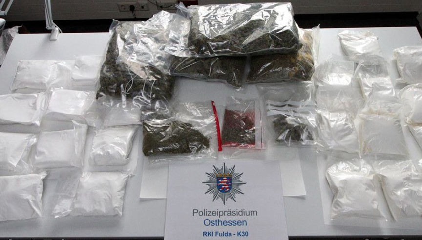
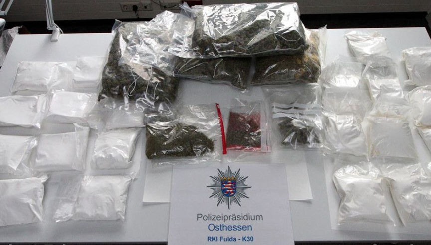

Darkweb Vendor "MrSnickers" Busted After Exit Scamming Customers
~2 min read | Published on 2019-06-06, tagged Darkweb-Vendor, Exit-Scammed using 280 words.
MrSnickers, a prolific dealer on several marketplaces, was quietly arrested by German authorities last year after pulling off a lucrative exit scam. In a recent press release, officials said the vendor had stolen more than 200,000 euros from customers on numerous darkweb marketplaces.
“The identification and arrest of the suspect is a significant blow against the illegal drug trade on the darknet,” officials said during an announcement.
The Stuttgart Public Prosecutor’s Office, in conjunction with other law enforcement offices in Germany that participated in the inestigation and arrest, announced that they had arrested a suspect for selling drugs on a number of darkweb marketplaces, including Wallstreet Market, Python Market, a the original DiDW forum. Although the investigation into the vendor’s activities on the darkweb ended in June 2019, the aothorities made the arrest in October 2018. They kept the news of the arrest quiet and only recently unvielded their success.

In 2017, investigators started tracing MrSnickers bitcoin transactions in an attempt to identify the suspect operating the account. Not long after MrSnickers had exit scammed his customers for 200,000 euros, the police identified the account owner as an individual living in Fulda, Germany. They raided his house and found:
95 kilograms of silver; more than two kilograms of gold; a securities deposit with a six-figure euro balance; and electronic storage devices with holding a total of 5.3 terabytes of data.
Police spokesman Martin Schäfer said the suspect “is an absolutely big fish.” The spokesperson told one German media outlet. “We have only now gone public, because the investigations have lasted until a few weeks ago.”
The 35-year-old suspect has been in custody since his 2018 arrest. He faces charges for large-scale narcotics trafficking.
Source: East Hesse Police Press Release
“The identification and arrest of the suspect is a significant blow against the illegal drug trade on the darknet,” officials said during an announcement.
The Stuttgart Public Prosecutor’s Office, in conjunction with other law enforcement offices in Germany that participated in the inestigation and arrest, announced that they had arrested a suspect for selling drugs on a number of darkweb marketplaces, including Wallstreet Market, Python Market, a the original DiDW forum. Although the investigation into the vendor’s activities on the darkweb ended in June 2019, the aothorities made the arrest in October 2018. They kept the news of the arrest quiet and only recently unvielded their success.

MrSnickers Bust
In 2017, investigators started tracing MrSnickers bitcoin transactions in an attempt to identify the suspect operating the account. Not long after MrSnickers had exit scammed his customers for 200,000 euros, the police identified the account owner as an individual living in Fulda, Germany. They raided his house and found:
Police spokesman Martin Schäfer said the suspect “is an absolutely big fish.” The spokesperson told one German media outlet. “We have only now gone public, because the investigations have lasted until a few weeks ago.”
The 35-year-old suspect has been in custody since his 2018 arrest. He faces charges for large-scale narcotics trafficking.
Source: East Hesse Police Press Release